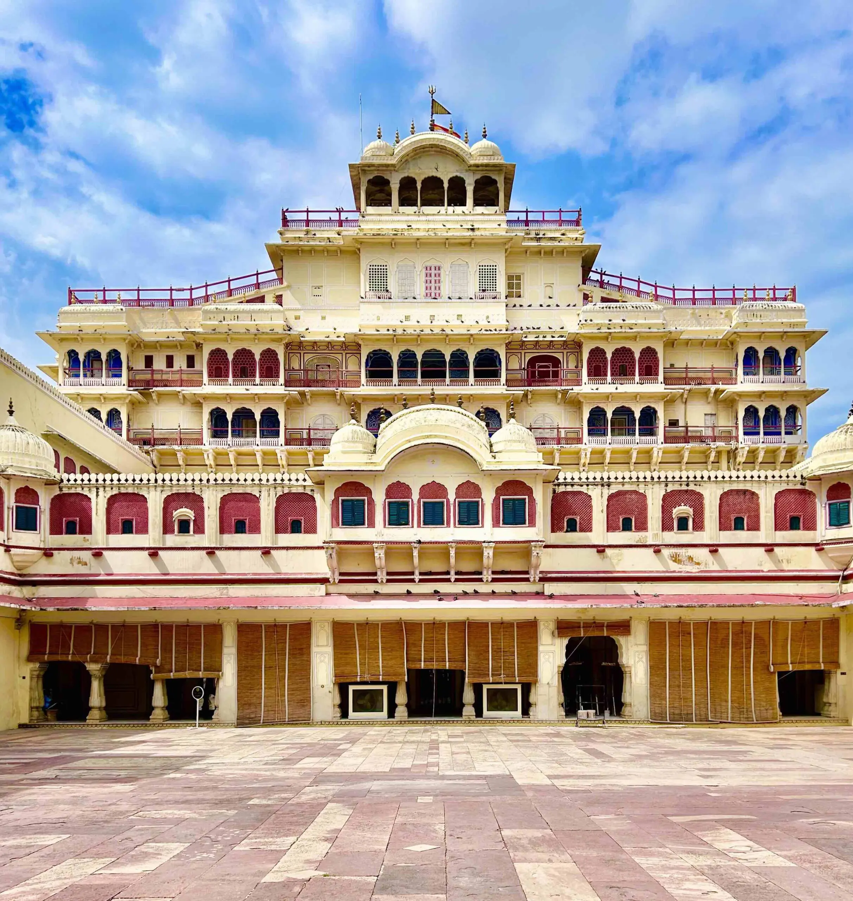
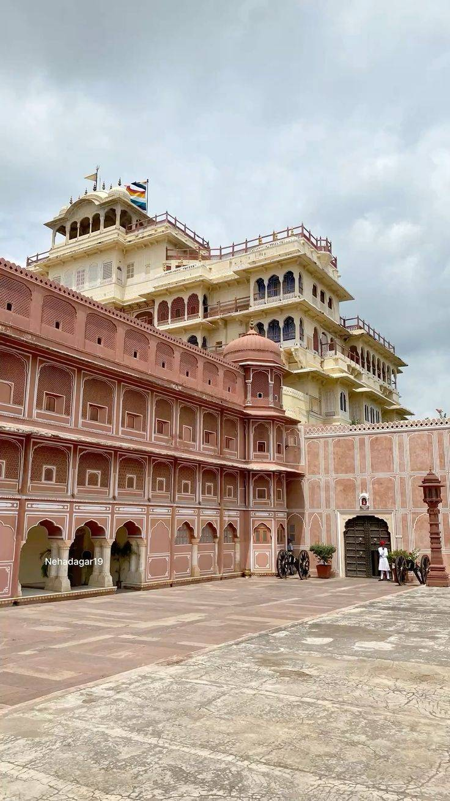

About City Palace Jaipur
City Palace Jaipur is one of the most beautiful royal palaces in Rajasthan. Located in the heart of Jaipur, it still serves as the residence of the royal family of Jaipur.
History
The palace was built in 1727 by Maharaja Sawai Jai Singh II, the founder of Jaipur. It showcases a perfect blend of Rajput, Mughal and European architectural styles.
Architecture
The palace complex consists of courtyards, gardens, museums and grand buildings. Important attractions include:
- Chandra Mahal
- Mubarak Mahal
- Diwan-i-Khas
- Diwan-i-Aam
Best Time to Visit
The best time to visit City Palace Jaipur is from October to March when the weather is pleasant for sightseeing.
Entry Fee & Timings
Indian Visitors: ₹200 Foreign Visitors: ₹700 Timings: 9:30 AM – 5:00 PM (Open daily)
Gallery

